Será un juego Universal 3D y en principio pondremos un plano con 4 paredes. Necesitaremos el Paquete
FirstPersonController.unitypackage que será nuestro Player.
El FPS tendrá 4 Armas distintas y cada una lanzará una munición distinta y hará un daño distinto a
cada enemigo.
Cada enemigo también tendrá un numero de vidas.
Tendremos que poner un Canvas con las vidas del player, puntos, enemigos que quedan, imagen de cada
arma con su munición. Se podrá activar/desactivar las armas dando a la tecla Q.
Y una escena Portada con 2 botones Play y Exit.
El alumno tendrá que hacer un plano con paredes para que no se escapen los enemigos cuando los vayamos poniendo. Los enemigos se los daremos nosotros mediante un package Y cuando tenga los enemigos terminados ya podrá cambiarlos por personajes de Mixamo.... y generar su propio entorno.

Hay que modificar en Edit/Project Settings/Player/Configuration-Activate Input Handling a Both para que el Player funcione correctamente y no de errores. Al hacer el Apply Unity se vuelve a reiniciar.
• Será un FirstPersonController que hemos descargado previamente y ponemos el Prefab Player en la Escena.
• Tendrá asociado un script Player.cs.
• Con 4 armas que estarán dentro del Player/FirstPersonCharacter junto con su generador de munición. Asi
que hay que descargar 4 armas, 4 municiones (Low Poly y siempre mirando hacia delante Z) y 4 sonidos de
disparos :
o Cada arma tiene un Generador que será un GO vacío para que cuando disparemos la bala salga en
ese punto. Siempre mirando hacia delante.

Una vez que tengamos las Armas colocadas dentro del Player vamos a manejarlas con los números del
1 al 4 para que se escondan y que aparezcan.
Variables:
• private const int NUM_ARMAS = 4.
• [SerializeField] int armaActiva = 0. Para saber que arma esta activa
• [SerializeField] Arma[] armas = new Arma[NUM_ARMAS].
• bool esconderArma = true.
Crear un Script Arma.cs (aunque de momento no lo usemos para que no de error) y asignarsela a cada
una de las Armas que tenemos en el Player.
Y arrastrar cada Arma al array de Arma del Player para que recoja ese script. Inicializarlo a 4.
La variable Arma[] es el Script Arma.cs que hemos creado.
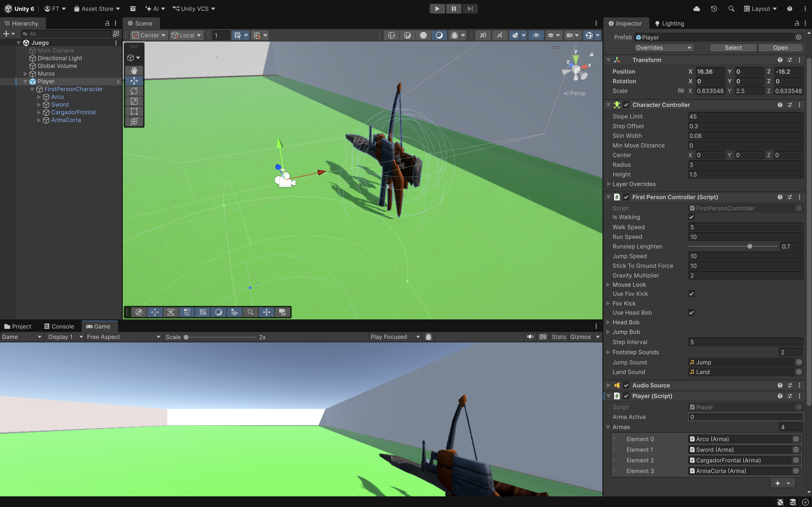
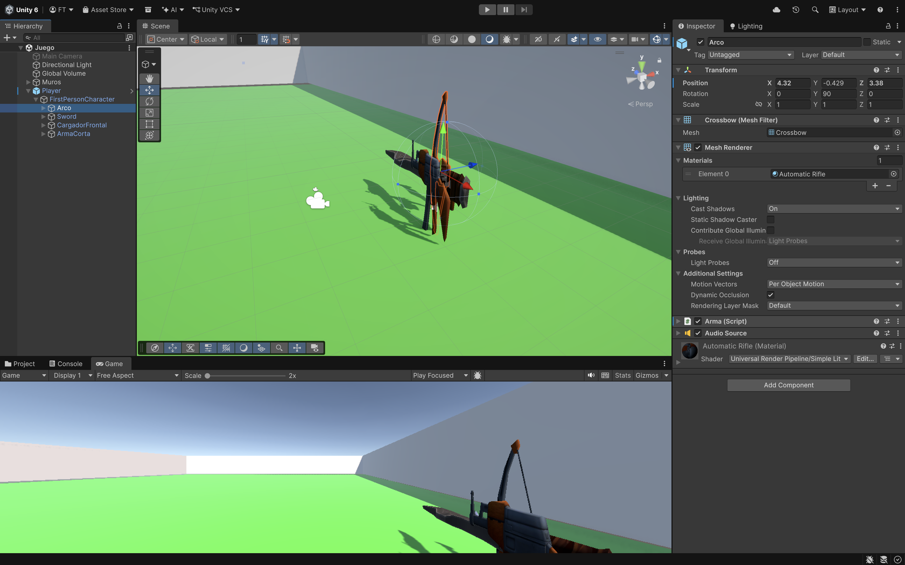
Start().
• DesactivarArmas(). Crear método para esconder todas las armas nada más empezar.
Método DesactivarArmas():
• Recorrer mediante un foreach el array arma y desactivarlas.
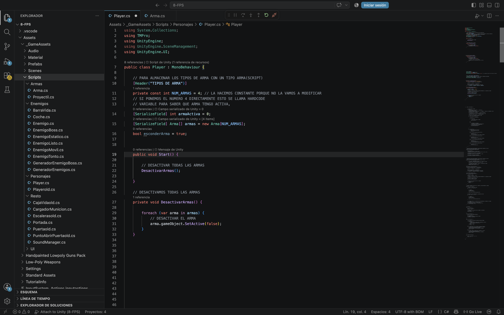
Update().
• Tecla Q para mostrar (Método ActivarArma) o no las armas del FPS (Método DesactivarArmas).
o Al poner "!" lo que hace es poner el valor contrario del que tenga el booleno esconderArma.
- Si esconderArma es true llamamos a DesactivarArmas() para que todo se esconda.
- Si esconderArma es false llamamos a ActivarArma() con un parámetro para saber que
arma tengo que activar. Por defecto ponemos a 0 armaActiva que es la primera que tengo en el FPS.
o Sino tengo escondida el arma la muestro dependiendo del número que selecciono mediante
Input.GetKeyDown(KeyCode.Alpha1...Aplha4) y llamaremos ActivarArma().
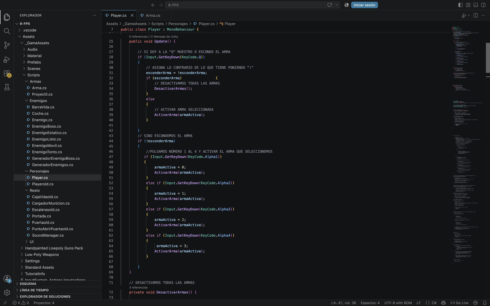
Los Arrays empiezan en el elemento 0, por eso ponemos armaActiva a 0.
Método ActivarArmas(int armaActiva):
• Primero DesactivarArmas().
• Activo el elemento del array del arma que he pasado por parámetro.
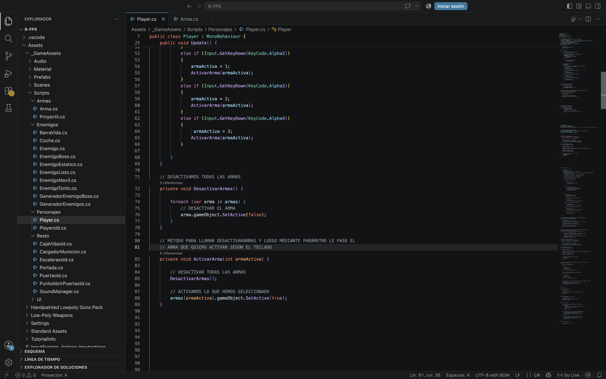
Vamos hacer que cada arma dispare un munición distinta cuando no esta escondida el arma.
Update().
• Botón izquierdo ratón haremos el Método Disparar() con Input.GetMouseButtonDown(0)
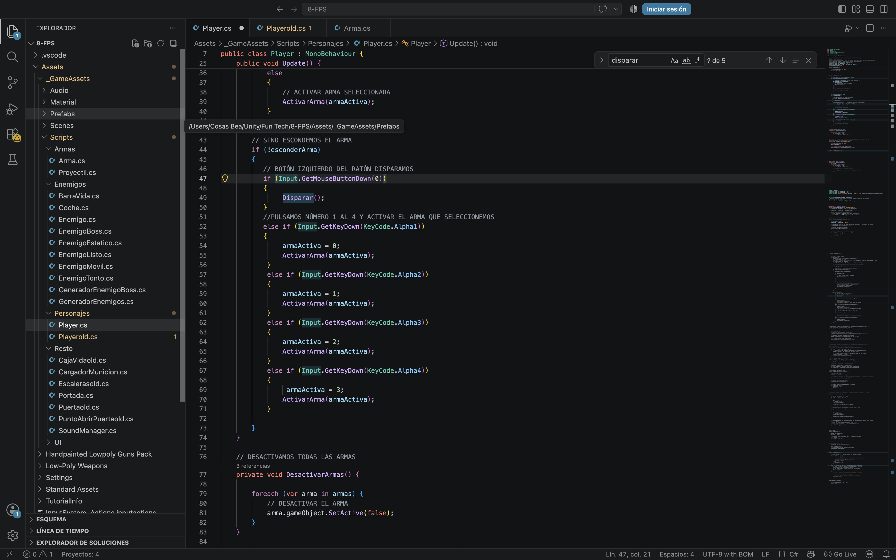
Método Disparar():
• Llamamos Método ApretarGatillo() del armaActiva que estára en el Script Arma.cs.
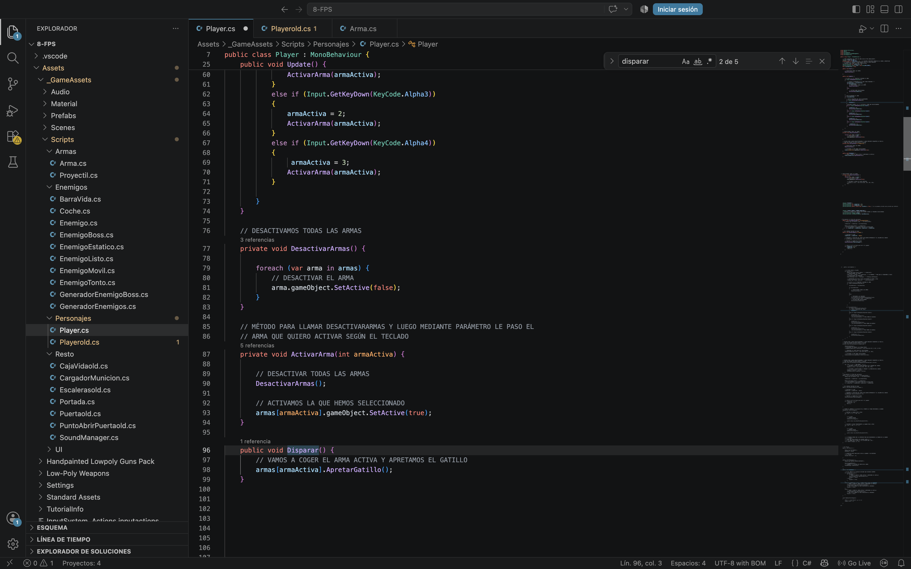
Necesitamos tener variables públicas para poder arrastrarlas desde el Editor:
• puntoGeneracion.
• prefabBala.
• municionMaxima.
• potenciaDisparo.
Tenemos que arrastrar estos objetos en cada una de las Armas.
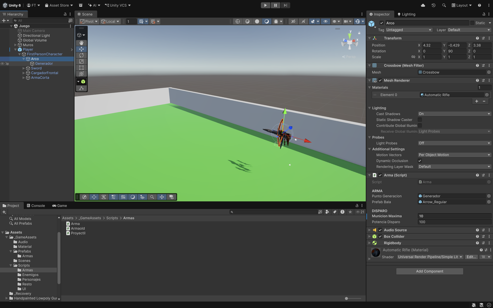
Start().
• Recoger el AudioSource.
Método ApretarGatillo(). Dispara si tenemos munición.
• Método ModificarMunicion() resta la munición.
• Crear munición en la posición del puntoGeneración.
• Sonido de la munición.
• La munición se lanza con AddRelativeForce siempre hacia delante * potenciaDisparo.
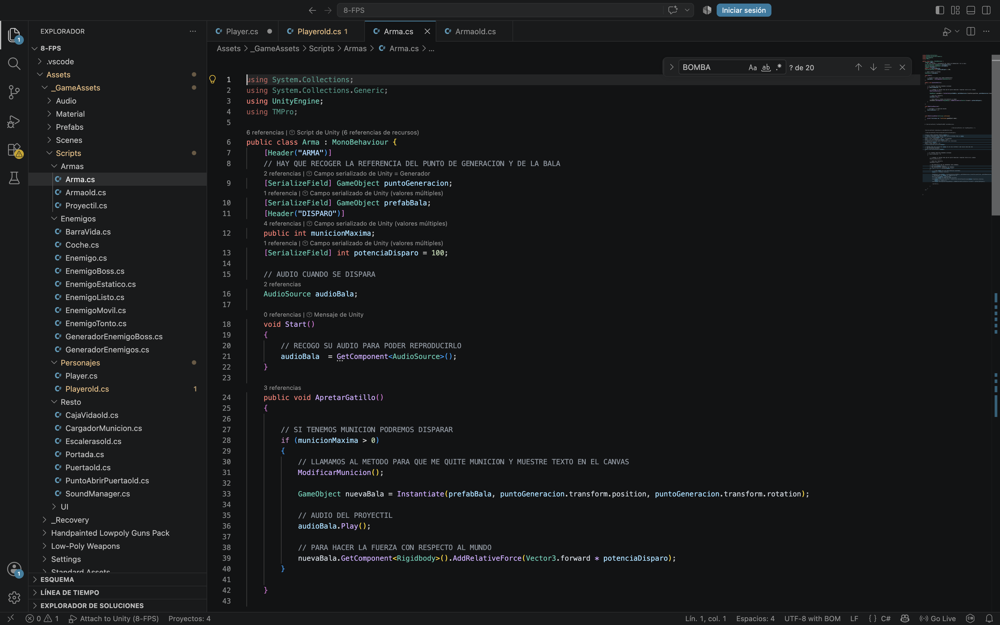
Método ModificarMunicion():
• Restar la municionMaxima.
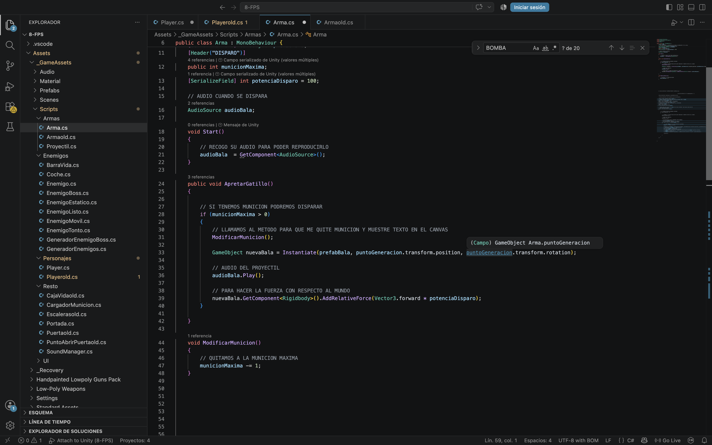
Método Disparar(). Vamos hacer varios tipos de disparo:
• Cuando disparemos el arco lo hara una si y otra no con un bool.
• Si dispara el CargadorFrontal lanzara varias Bombas a la vez y cada una
se lanzara con una rotación distinta. Al hacerlo con instantiates consumira más memoria que si
lo hacemos con Partículas.
• Y el resto de la armas dispara cuando hacemos el click.
Necesitamos una variable bool disparo para saber si hemos disparado o no.
Disparo del Arco: armaActiva = 0.
• Si disparo llamamos al Método ApretarGatillo().
o disparo = false. Para que no dispare seguido.
• Y si no disparo ponemos disparo = true para que la siguiente vez que quiera disparar lo puede
hacer.
Disparo del CargadorFrontal: armaActiva = 2.
• Método ApretarGatilloBomba() (Pendiente).
• disparo = false.
Disparo del Resto de las armas:
• Método ApretarGatillo().
• disparo = false.
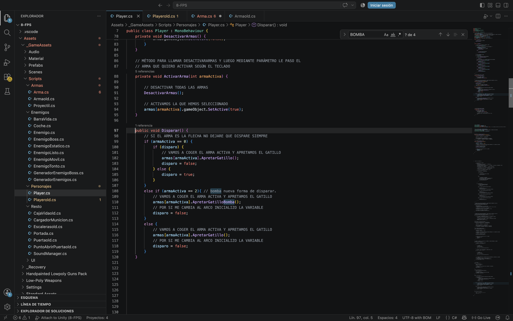
Variables:
• contadorBombas para saber cuantas bombas saldrán cuando haga un disparo.
• tiempoVida para que se destruyan al cabo de unos segundos.
• Quaternion[] bombas representa las rotaciones de las bombas.
• esparcir
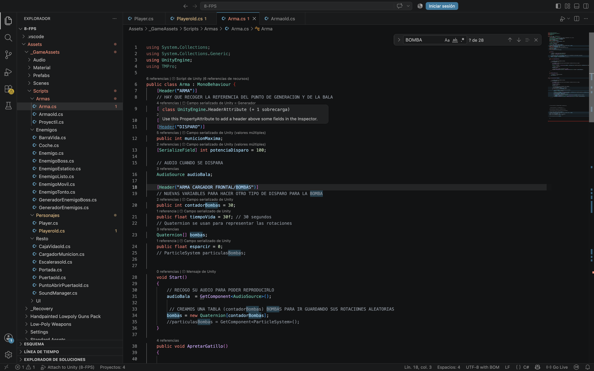
Método ApretarGatilloBomba(). Dispara si tenemos munición.
• Método ModificarMunicion() resta la munición.
• Sonido de la munición.
• for hasta el contadorBombas.
o Le pone a la bomba una rotacion aleatoria.
o Instantiate del prefabBala desde la posición y rotación del GO Generación.
o Destruir al cabo de unos segundos.
o A la nueva bomba le damos un giro distinto con Quaternion.RotateTowards().
o Lanzar la bomba con un AddRelativeForce hacia delante.
Quaternion.RotateTowards gira un objeto desde una rotación inicial hacia una rotación objetivo usando un paso máximo en grados, sin pasarse del límite establecido.
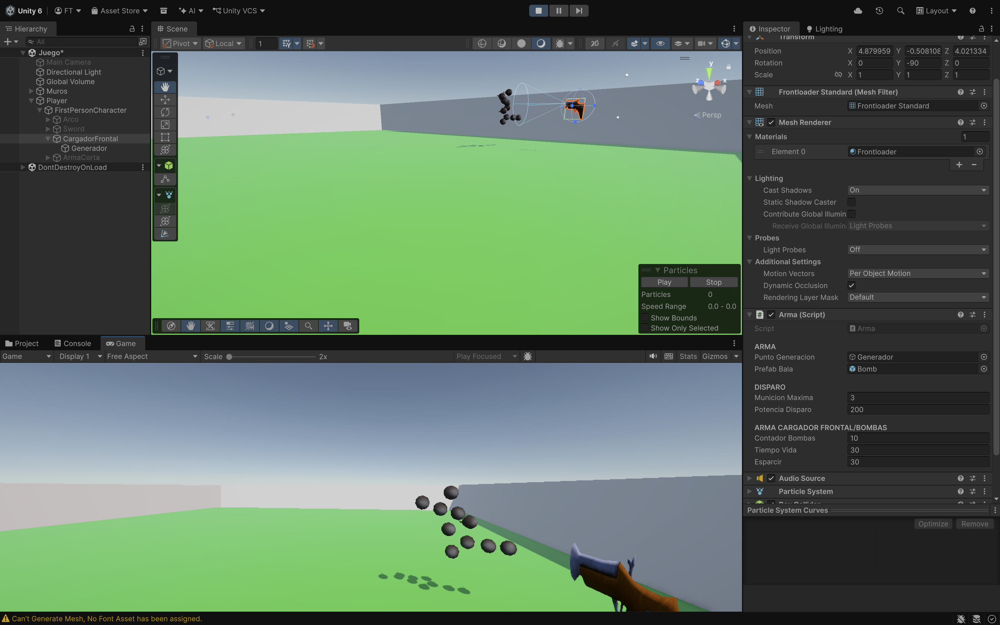
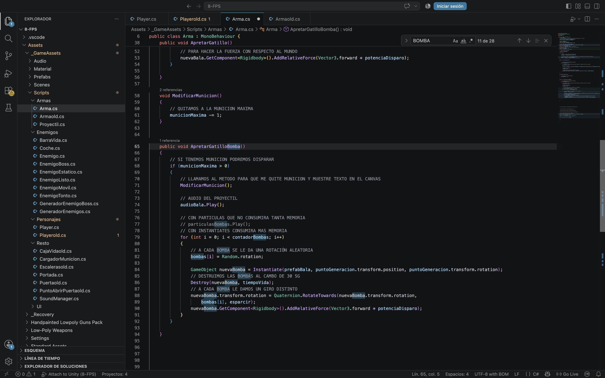
--------------------------
o La primera vez que damos a la Q aparecerá un Canvas con todas las Armas (el arma activa en color para saber que esta seleccionada), la munición que tiene por defecto y el arma activa en el FPS.
o Las armas las activaremos con números del 1 al 4 mediante Input.GetKeyDown(KeyCode.Alpha1)
Alpha1….Alpha4.
- Usaremos Método ActivarArma con el parámetro del arma que esta activa. Primero se
desactivarán todas las Armas y después el activamos el arma seleccionada.
o Botón izquierdo ratón haremos el Disparar() con Input.GetMouseButtonDown(0)
NO podemos tener ningún valor (de tipo númerico, string…..) puesto en cualquier método. Todo tiene que estar parametrizado con variables para tenerlo todo más controlado.
• Métodos.
o ActivarArma (int armaActiva).
- DesactivarArmas.
- Cambiar Color del Canvas del arma seleccionada.
imagen[armaActiva].color = new Color(255, 0, 0, 255).
- Activar el Arma.
o DesactivarArmas.
- Lo haremos con un foreach recorriendo todo su array.
- Habrá que dejar las imágenes del Canvas con su color original.
o Disparar.
- Dependiendo que munición sea ApretarGatillo ó ApretarGatilloBomba que son métodos
que están en Arma.cs. (Luego lo hacemos).
o IncrementarVida.
- Incrementamos la vida a la variable VidaActual. Lo usaremos cuando recojamos las Cajas
de Vida a lo largo del juego.
- El Player siempre tendrá un número máximo de vidas.
o RecibirDanyo (int danyo).
- Recibirá por parámetro el daño que le da dependiendo de que Enemigo le toque.
- Sonido de muerte del Player.
- Mostrar la Imagen de Sangre del Canvas. En principio estará transparente (Canal Alpha
) e ira apareciendo poco a poco y luego desaparecerá poco a poco. Método MostrarSangre().
- Si no tenemos vida llamar método Morir().
El RecibirDanyo lo llamaremos desde el Enemigo Movil cuando choque con el Player.
o IEnumerator MostrarSangre().
- Usaremos 2 for.
• Uno para que aparezca poco a poco cambiando el canal Alpha a+=0.01.
• Y el otro para que desaparezca poco a poco cambiando el canal Alpha a-=0.01.
• Y llamaremos Método CambiarColorSangre().
o CambiarColorSangre().
- Color c = new Color(r, g, b, a) r,g,b las recogeremos nada más empezar el juego.
- Este color habría que asignárselo a la sangre.color,
o Morir volvería a la escena de inicio.
o Disparar().
- A una de las armas hare que no me deje disparar siempre mediante un bool
armas[armaActiva].ApretarGatillo().
- Si tenemos un proyectil que sea una bomba podremos hacer
armas[armaActiva].ApretarGatilloBomba().
o ActivarDesactivarImagenesCanvasArmas(false/true). Va con parámetro.
- Recorrer el Array imagen y textoMunicion activamos o desactivamos dependiendo del
parámetro.
El ApretarGatillo y ApretarGatilloBomba lo haremos en el Script de Arma.cs.
• GO Vacio.
• Tendrá asociado un script SoundManager.cs donde pondremos un parámetro de tipo AudioClip que será un
array con todos los sonidos que necesitamos.
• Y un componente AudioSource.
• Creamos un Método SeleccionAudio(int índice, float volumen).
o PlayOneShot.
GO vacío para poder tener casi todos los sonidos con un script: SoundManager.cs. Tendrá un array AudioSource y solo pasaremos el clip y el volumen. Lo haremos más adelante.
Cada Arma tendrá asociado otro Script Arma.cs. Que es lo que pasaremos por parámetro al Player.cs mediante un
Array.
• Variables más destacadas:.
o Quaternion[] bombas.
o int contadorBombas.
• Start().
Hay que crear un Array de bombas con una longitud de contadorBombas para que la podamos usar
en el Método ApretarGatilloBomba cuando seleccionemos un arma en concreto.
o bombas = new Quaternion[contadorBombas]
Creamos un Array de bombas de tipo Quaternion para ir guardando sus rotaciones aleatorias.
• Método ApretarGatillo().
o Si tengo munición.
- Se podrá disparar.
- ModificarMunicion().
- Creo la munición y la lanzo. AddRelativeForce.
• Método ApretarGatilloBomba() saldrán varias bombas con rotaciones distintas.
o Si tengo munición.
- Se podrá disparar.
- ModificarMunicion().
- For hasta contadorMunicion.
• bombas[i] = Random.rotacion.
• Crear la bomba en su punto de generación que llamare nuevaBomba.
• Hay que ir destruyendo la nuevaBomba con un tiempo para que no se nos cargue la memoria.
• A la nueva bomba se le da un giro distinto.
nuevaBomba.transform.rotation = Quaternion.RotateTowards(nuevaBomba.transform.rotation,
bombas[i], esparcir).
• Se lanza con AddRelative Force
• Método ModificarMunicion().
Hay que quitar la munición y actualizarla en el Canvas.
Poner sonidos cuando lancemos la munición.
• Tendrá asociado un script Proyectil.cs.
• El Proyectil puede colisionar con:.
o Enemigos Tontos, Listos, Estático, Boss y se le quitara vida al Enemigo.
o Player si el EnemigoEstatico le dispara.
• Cada proyectil hará un daño distinto a cada enemigo.
Para descargar los objetos necesarios para el juego, lo haremos desde este link. Lo descargaremos y lo descomprimimos en el directorio del alumno.